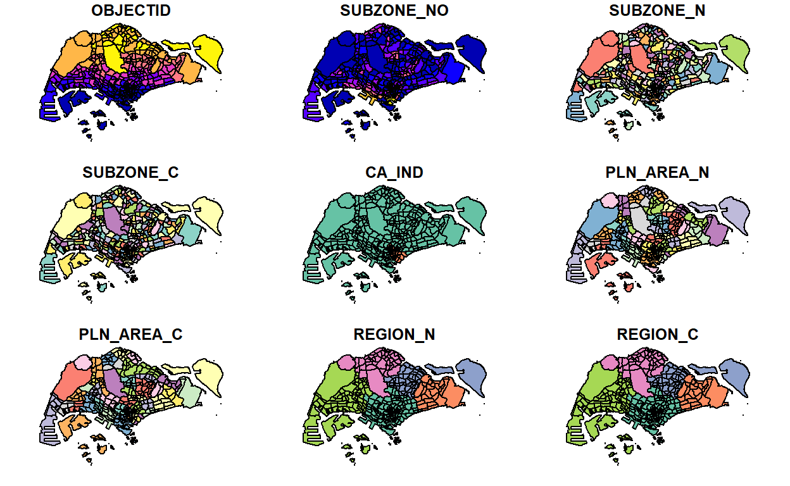
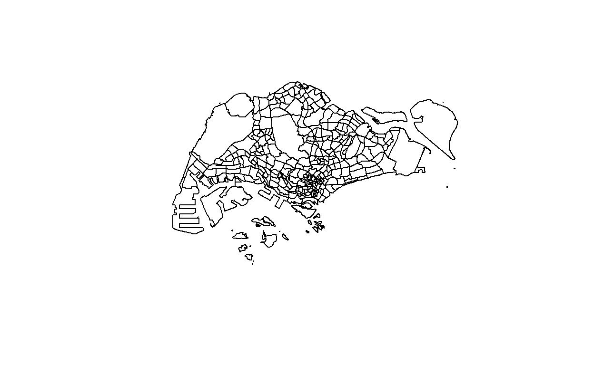
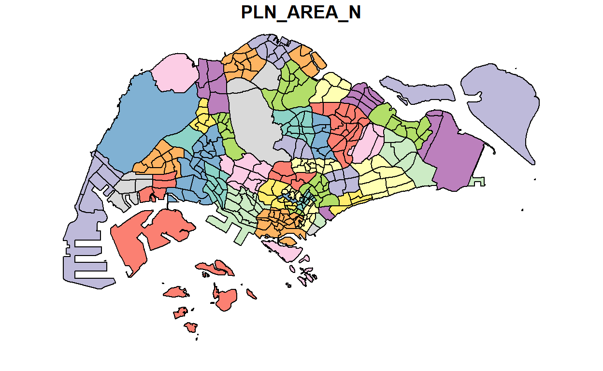
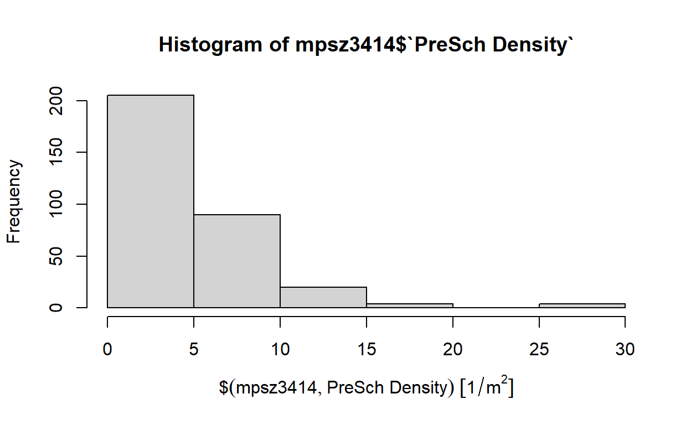
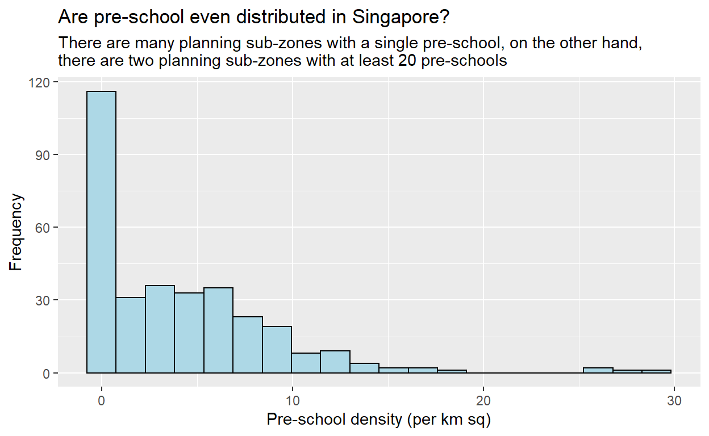
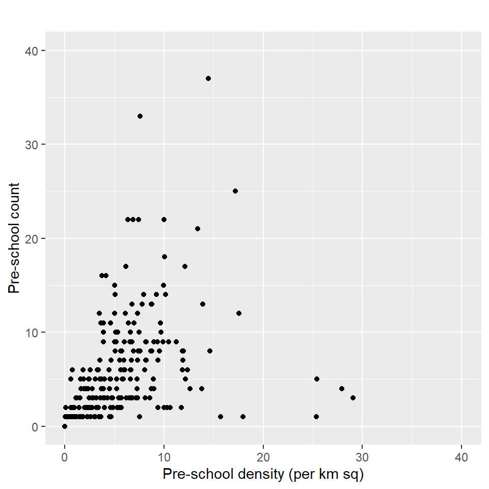

In this hands-on exercise, you will learn how to handle geospatial data in R by using sf package.
By the end of this hands-on exercise, you should acquire the following competencies:
Note: Students are encouraged to read the reference guide of each function, especially the input data requirements, syntaxt and argument option before using them.
Data are key to data analytics including geospatial analytics. Hence, before analysing, we need to assemble the necessary data. In this hands-on exercise, you are required to extract the necessary data sets from the following sources:
Note: The purpose of this section is not merely extracting the necessary data sets. It also aims to introduce you to public available data sets. Students are encouraged to explore the rest of the available data sets in these three data sources.
Next, at the Hands-on_Ex02 folder, create a sub-folder called data. Then, inside the data sub-folder, create two sub-folders and name them geospatial and aspatial respectively.
Place Master Plan 2014 Subzone Boundary (Web), Pre-Schools Location and Cycling Path zipped files into geospatial sub-folder and unzipped them. Copy the unzipped files from their respective sub-folders and place them inside geospatial sub-folder. The file listing in geospatial sub-folder should look similar to the screenshot below.
Now, you will extract the downloaded listing data file. At Downloads folder, cut and paste listing.csv into aspatial sub-folder.
In this hands-on exercise, two R packages will be used. They are:
Tidyverse consists of a family of R packages. In this hands-on exercise, the following packages will be used:
Type the following code chunk.
packages = c('sf', 'tidyverse')
for (p in packages){
if(!require(p, character.only = T)){
install.packages(p)
}
library(p,character.only = T)
}
What we can learn from the code chunk above:
packages will be created. It consists of all the R packages required to accomplish this hands-on exercise.package have been installed in R. If they have yet been installed, they will be installed.In this section, you will learn how to import the following geospatial data into R by using st_read() of sf package:
MP14_SUBZONE_WEB_PL, a polygon feature layer in ESRI shapefile format,CyclingPath, a line feature layer in ESRI shapefile format, andPreSchool, a point feature layer in kml file format.The code chunk below uses st_read() function of sf package to import MP14_SUBZONE_WEB_PL shapefile into R as a polygon feature data frame. Note that when the input geospatial data is in shapefile format, two arguments will be used, namely: dsn to define the data path and layer to provide the shapefile name. Also note that no extension such as .shp, .dbf, .prj and .shx are needed.
mpsz = st_read(dsn = "data/geospatial",
layer = "MP14_SUBZONE_WEB_PL")
Reading layer `MP14_SUBZONE_WEB_PL' from data source
`D:\tskam\IS415\Hands_on_Ex\Hands-On_ex02\data\geospatial'
using driver `ESRI Shapefile'
Simple feature collection with 323 features and 15 fields
Geometry type: MULTIPOLYGON
Dimension: XY
Bounding box: xmin: 2667.538 ymin: 15748.72 xmax: 56396.44 ymax: 50256.33
Projected CRS: SVY21The message above reveals that the geospatial objects are multipolygon features. There are a total of 323 multipolygon features and 15 fields in mpsz simple feature data frame. mpsz is in svy21 projected coordinates systems. The bounding box provides the x extend and y extend of the data.
The code chunk below uses st_read() function of sf package to import CyclingPath shapefile into R as line feature data frame.
cyclingpath = st_read(dsn = "data/geospatial",
layer = "CyclingPath")
Reading layer `CyclingPath' from data source
`D:\tskam\IS415\Hands_on_Ex\Hands-On_ex02\data\geospatial'
using driver `ESRI Shapefile'
Simple feature collection with 1625 features and 2 fields
Geometry type: LINESTRING
Dimension: XY
Bounding box: xmin: 12711.19 ymin: 28711.33 xmax: 42626.09 ymax: 48948.15
Projected CRS: SVY21The message above reveals that there are a total of 1625 features and 2 fields in cyclingpath linestring feature data frame and it is in svy21 projected coordinates system too.
The pre-schools-location-kml is in kml format. The code chunk below will be used to import the kml into R. Notice that in the code chunk below, the complete path and the kml file extension were provided.
preschool = st_read("data/geospatial/pre-schools-location-kml.kml")
Reading layer `PRESCHOOLS_LOCATION' from data source
`D:\tskam\IS415\Hands_on_Ex\Hands-On_ex02\data\geospatial\pre-schools-location-kml.kml'
using driver `KML'
Simple feature collection with 1359 features and 2 fields
Geometry type: POINT
Dimension: XYZ
Bounding box: xmin: 103.6824 ymin: 1.248403 xmax: 103.9897 ymax: 1.462134
z_range: zmin: 0 zmax: 0
Geodetic CRS: WGS 84The message above reveals that preschool is a point feature data frame. There are a total of 1359 features and 2 fields. Different from the previous two simple feature data frame, preschool is in wgs84 coordinates system.
In this sub-section, you will learn different ways to retrieve information related to the content of a simple feature data frame.
The column in the sf data.frame that contains the geometries is a list, of class sfc. We can retrieve the geometry list-column in this case by mpsz$geom or mpsz[[1]], but the more general way uses st_geometry() as shown in the code chunk below.
st_geometry(mpsz)
Geometry set for 323 features
Geometry type: MULTIPOLYGON
Dimension: XY
Bounding box: xmin: 2667.538 ymin: 15748.72 xmax: 56396.44 ymax: 50256.33
Projected CRS: SVY21
First 5 geometries:Notice that the print only displays basic information of the feature class such as type of geometry, the geographic extent of the features and the coordinate system of the data.
Beside the basic feature information, we also would like to learn more about the associated attribute information in the data frame. This is the time you will find glimpse() of dplyr. very handy as shown in the code chunk below.
glimpse(mpsz)
Rows: 323
Columns: 16
$ OBJECTID <int> 1, 2, 3, 4, 5, 6, 7, 8, 9, 10, 11, 12, 13, 14, 15~
$ SUBZONE_NO <int> 1, 1, 3, 8, 3, 7, 9, 2, 13, 7, 12, 6, 1, 5, 1, 1,~
$ SUBZONE_N <chr> "MARINA SOUTH", "PEARL'S HILL", "BOAT QUAY", "HEN~
$ SUBZONE_C <chr> "MSSZ01", "OTSZ01", "SRSZ03", "BMSZ08", "BMSZ03",~
$ CA_IND <chr> "Y", "Y", "Y", "N", "N", "N", "N", "Y", "N", "N",~
$ PLN_AREA_N <chr> "MARINA SOUTH", "OUTRAM", "SINGAPORE RIVER", "BUK~
$ PLN_AREA_C <chr> "MS", "OT", "SR", "BM", "BM", "BM", "BM", "SR", "~
$ REGION_N <chr> "CENTRAL REGION", "CENTRAL REGION", "CENTRAL REGI~
$ REGION_C <chr> "CR", "CR", "CR", "CR", "CR", "CR", "CR", "CR", "~
$ INC_CRC <chr> "5ED7EB253F99252E", "8C7149B9EB32EEFC", "C35FEFF0~
$ FMEL_UPD_D <date> 2014-12-05, 2014-12-05, 2014-12-05, 2014-12-05, ~
$ X_ADDR <dbl> 31595.84, 28679.06, 29654.96, 26782.83, 26201.96,~
$ Y_ADDR <dbl> 29220.19, 29782.05, 29974.66, 29933.77, 30005.70,~
$ SHAPE_Leng <dbl> 5267.381, 3506.107, 1740.926, 3313.625, 2825.594,~
$ SHAPE_Area <dbl> 1630379.3, 559816.2, 160807.5, 595428.9, 387429.4~
$ geometry <MULTIPOLYGON [m]> MULTIPOLYGON (((31495.56 30..., MULT~glimpse() report reveals the data type of each fields. For example FMEL-UPD_D field is in date data type and X_ADDR, Y_ADDR, SHAPE_L and SHAPE_AREA fields are all in double-precision values.
Sometimes we would like to reveal complete information of a feature object, this is the job of head() of Base R
head(mpsz, n=5)
Simple feature collection with 5 features and 15 fields
Geometry type: MULTIPOLYGON
Dimension: XY
Bounding box: xmin: 25867.68 ymin: 28369.47 xmax: 32362.39 ymax: 30435.54
Projected CRS: SVY21
OBJECTID SUBZONE_NO SUBZONE_N SUBZONE_C CA_IND PLN_AREA_N
1 1 1 MARINA SOUTH MSSZ01 Y MARINA SOUTH
2 2 1 PEARL'S HILL OTSZ01 Y OUTRAM
3 3 3 BOAT QUAY SRSZ03 Y SINGAPORE RIVER
4 4 8 HENDERSON HILL BMSZ08 N BUKIT MERAH
5 5 3 REDHILL BMSZ03 N BUKIT MERAH
PLN_AREA_C REGION_N REGION_C INC_CRC FMEL_UPD_D
1 MS CENTRAL REGION CR 5ED7EB253F99252E 2014-12-05
2 OT CENTRAL REGION CR 8C7149B9EB32EEFC 2014-12-05
3 SR CENTRAL REGION CR C35FEFF02B13E0E5 2014-12-05
4 BM CENTRAL REGION CR 3775D82C5DDBEFBD 2014-12-05
5 BM CENTRAL REGION CR 85D9ABEF0A40678F 2014-12-05
X_ADDR Y_ADDR SHAPE_Leng SHAPE_Area
1 31595.84 29220.19 5267.381 1630379.3
2 28679.06 29782.05 3506.107 559816.2
3 29654.96 29974.66 1740.926 160807.5
4 26782.83 29933.77 3313.625 595428.9
5 26201.96 30005.70 2825.594 387429.4
geometry
1 MULTIPOLYGON (((31495.56 30...
2 MULTIPOLYGON (((29092.28 30...
3 MULTIPOLYGON (((29932.33 29...
4 MULTIPOLYGON (((27131.28 30...
5 MULTIPOLYGON (((26451.03 30...Note: One of the useful argument of head() is it allows user to select the numbers of record to display (i.e. the n argument).
In geospatial data science, by looking at the feature information is not enough. We are also interested to visualise the geospatial features. This is the time you will find plot() of R Graphic comes in very handy as shown in the code chunk below.
plot(mpsz)

The default plot of an sf object is a multi-plot of all attributes, up to a reasonable maximum as shown above. We can, however, choose to plot only the geometry by using the code chunk below.
plot(st_geometry(mpsz))

Alternatively, we can also choose the plot the sf object by using a specific attribute as shown in the code chunk below.
plot(mpsz["PLN_AREA_N"])

Note: plot() is mean for plotting the geospatial object for quick look. For high cartographic quality plot, other R package such as tmap should be used.
Map projection is an important property of a geospatial data. In order to perform geoprocessing using two geospatial data, we need to ensure that both geospatial data are projected using similar coordinate system.
In this section, you will learn how to project a simple feature data frame from one coordinate system to another coordinate system. The technical term of this process is called projection transformation.
One of the common issue that can happen during importing geospatial data into R is that the coordinate system of the source data was either missing (such as due to missing .proj for ESRI shapefile) or wrongly assigned during the importing process.
This is an example the coordinate system of mpsz simple feature data frame by using st_crs() of sf package as shown in the code chunk below.
st_crs(mpsz)
Coordinate Reference System:
User input: SVY21
wkt:
PROJCRS["SVY21",
BASEGEOGCRS["SVY21[WGS84]",
DATUM["World Geodetic System 1984",
ELLIPSOID["WGS 84",6378137,298.257223563,
LENGTHUNIT["metre",1]],
ID["EPSG",6326]],
PRIMEM["Greenwich",0,
ANGLEUNIT["Degree",0.0174532925199433]]],
CONVERSION["unnamed",
METHOD["Transverse Mercator",
ID["EPSG",9807]],
PARAMETER["Latitude of natural origin",1.36666666666667,
ANGLEUNIT["Degree",0.0174532925199433],
ID["EPSG",8801]],
PARAMETER["Longitude of natural origin",103.833333333333,
ANGLEUNIT["Degree",0.0174532925199433],
ID["EPSG",8802]],
PARAMETER["Scale factor at natural origin",1,
SCALEUNIT["unity",1],
ID["EPSG",8805]],
PARAMETER["False easting",28001.642,
LENGTHUNIT["metre",1],
ID["EPSG",8806]],
PARAMETER["False northing",38744.572,
LENGTHUNIT["metre",1],
ID["EPSG",8807]]],
CS[Cartesian,2],
AXIS["(E)",east,
ORDER[1],
LENGTHUNIT["metre",1,
ID["EPSG",9001]]],
AXIS["(N)",north,
ORDER[2],
LENGTHUNIT["metre",1,
ID["EPSG",9001]]]]Although mpsz data frame is projected in svy21 but when we read until the end of the print, it indicates that the EPSG is 9001. This is a wrong EPSG code because the correct EPSG code for svy21 should be 3414.
In order to assign the correct EPSG code to mpsz data frame, st_set_crs() of sf package is used as shown in the code chunk below.
mpsz3414 <- st_set_crs(mpsz, 3414)
Now, let us check the CSR again by using the code chunk below.
st_crs(mpsz3414)
Coordinate Reference System:
User input: EPSG:3414
wkt:
PROJCRS["SVY21 / Singapore TM",
BASEGEOGCRS["SVY21",
DATUM["SVY21",
ELLIPSOID["WGS 84",6378137,298.257223563,
LENGTHUNIT["metre",1]]],
PRIMEM["Greenwich",0,
ANGLEUNIT["degree",0.0174532925199433]],
ID["EPSG",4757]],
CONVERSION["Singapore Transverse Mercator",
METHOD["Transverse Mercator",
ID["EPSG",9807]],
PARAMETER["Latitude of natural origin",1.36666666666667,
ANGLEUNIT["degree",0.0174532925199433],
ID["EPSG",8801]],
PARAMETER["Longitude of natural origin",103.833333333333,
ANGLEUNIT["degree",0.0174532925199433],
ID["EPSG",8802]],
PARAMETER["Scale factor at natural origin",1,
SCALEUNIT["unity",1],
ID["EPSG",8805]],
PARAMETER["False easting",28001.642,
LENGTHUNIT["metre",1],
ID["EPSG",8806]],
PARAMETER["False northing",38744.572,
LENGTHUNIT["metre",1],
ID["EPSG",8807]]],
CS[Cartesian,2],
AXIS["northing (N)",north,
ORDER[1],
LENGTHUNIT["metre",1]],
AXIS["easting (E)",east,
ORDER[2],
LENGTHUNIT["metre",1]],
USAGE[
SCOPE["Cadastre, engineering survey, topographic mapping."],
AREA["Singapore - onshore and offshore."],
BBOX[1.13,103.59,1.47,104.07]],
ID["EPSG",3414]]Notice that the EPSG code is 3414 now.
In geospatial analytics, it is very common for us to transform the original data from geographic coordinate system to projected coordinate system. This is because geographic coordinate system is not appropriate if the analysis need to use distance or/and area measurements.
Let us take preschool simple feature data frame as an example. The print below reveals that it is in wgs84 coordinate system.
Geometry set for 1359 features
Geometry type: POINT
Dimension: XYZ
Bounding box: xmin: 103.6824 ymin: 1.248403 xmax: 103.9897 ymax: 1.462134
z_range: zmin: 0 zmax: 0
Geodetic CRS: WGS 84
First 5 geometries:This is a scenario that st_set_crs() is not appropriate and st_transform() of sf package should be used. This is because we need to reproject preschool from one coordinate system to another coordinate system mathemetically.
Let us perform the projection transformation by using the code chunk below.
preschool3414 <- st_transform(preschool,
crs = 3414)
Note: In practice, we need find out the appropriate project coordinate system to use before performing the projection transformation.
Next, let us display the content of preschool3414 sf data frame as shown below.
Geometry set for 1359 features
Geometry type: POINT
Dimension: XYZ
Bounding box: xmin: 11203.01 ymin: 25667.6 xmax: 45404.24 ymax: 49300.88
z_range: zmin: 0 zmax: 0
Projected CRS: SVY21 / Singapore TM
First 5 geometries:Notice that it is in svy21 projected coordinate system now. Furthermore, if you refer to Bounding box:, the values are greater than 0-360 range of decimal degree commonly used by most of the geographic coordinate systems.
In practice, it is not unusual that we will come across data such as listing of Inside Airbnb. We call this kind of data aspatial data. This is because it is not a geospatial data but among the data fields, there are two fields that capture the x- and y-coordinates of the data points.
In this section, you will learn how to import an aspatial data into R environment and save it as a tibble data frame. Next, you will convert it into a simple feature data frame.
For the purpose of this exercise, the listings.csv data downloaded from AirBnb will be used.
Since listings data set is in csv file format, we will use read_csv() of readr package to import listing.csv as shown the code chunk below. The output R object is called listings and it is a tibble data frame.
listings <- read_csv("data/aspatial/listings.csv")
After importing the data file into R, it is important for us to examine if the data file has been imported correctly.
The code chunk below shows list() is used to do the job.
glimpse(listings)
Rows: 4,252
Columns: 16
$ id <dbl> 50646, 71609, 71896, 71903, 2~
$ name <chr> "Pleasant Room along Bukit Ti~
$ host_id <dbl> 227796, 367042, 367042, 36704~
$ host_name <chr> "Sujatha", "Belinda", "Belind~
$ neighbourhood_group <chr> "Central Region", "East Regio~
$ neighbourhood <chr> "Bukit Timah", "Tampines", "T~
$ latitude <dbl> 1.33432, 1.34537, 1.34754, 1.~
$ longitude <dbl> 103.7852, 103.9589, 103.9596,~
$ room_type <chr> "Private room", "Private room~
$ price <dbl> 80, 178, 81, 81, 52, 40, 72, ~
$ minimum_nights <dbl> 90, 90, 90, 90, 14, 14, 90, 8~
$ number_of_reviews <dbl> 18, 20, 24, 48, 20, 13, 133, ~
$ last_review <date> 2014-07-08, 2019-12-28, 2014~
$ reviews_per_month <dbl> 0.22, 0.28, 0.33, 0.67, 0.20,~
$ calculated_host_listings_count <dbl> 1, 4, 4, 4, 50, 50, 7, 1, 50,~
$ availability_365 <dbl> 365, 365, 365, 365, 353, 364,~The output reveals that listing tibble data frame consists of 4252 rows and 16 columns. Two useful fields we are going to use in the next phase are latitude and longitude. Note that they are in decimal degree format. As a best guess, we will assume that the data is in wgs84 Geographic Coordinate System.
The code chunk below converts listing data frame into a simple feature data frame by using st_as_sf() of sf packages
listings_sf <- st_as_sf(listings,
coords = c("longitude", "latitude"),
crs=4326) %>%
st_transform(crs = 3414)
Things to learn from the arguments above:
Let us examine the content of this newly created simple feature data frame.
glimpse(listings_sf)
Rows: 4,252
Columns: 15
$ id <dbl> 50646, 71609, 71896, 71903, 2~
$ name <chr> "Pleasant Room along Bukit Ti~
$ host_id <dbl> 227796, 367042, 367042, 36704~
$ host_name <chr> "Sujatha", "Belinda", "Belind~
$ neighbourhood_group <chr> "Central Region", "East Regio~
$ neighbourhood <chr> "Bukit Timah", "Tampines", "T~
$ room_type <chr> "Private room", "Private room~
$ price <dbl> 80, 178, 81, 81, 52, 40, 72, ~
$ minimum_nights <dbl> 90, 90, 90, 90, 14, 14, 90, 8~
$ number_of_reviews <dbl> 18, 20, 24, 48, 20, 13, 133, ~
$ last_review <date> 2014-07-08, 2019-12-28, 2014~
$ reviews_per_month <dbl> 0.22, 0.28, 0.33, 0.67, 0.20,~
$ calculated_host_listings_count <dbl> 1, 4, 4, 4, 50, 50, 7, 1, 50,~
$ availability_365 <dbl> 365, 365, 365, 365, 353, 364,~
$ geometry <POINT [m]> POINT (22646.02 35167.9~Table above shows the content of listing_sf. Notice that a new column called geometry has been added into the data frame. On the other hand, the longitude and latitude columns have been dropped from the data frame.
Besides providing functions to handling (i.e. importing, exporting, assigning projection, transforming projection etc) geospatial data, sf package also offers a wide range of geoprocessing (also known as GIS analysis) functions.
In this section, you will learn how to perform two commonly used geoprocessing functions, namely buffering and point in polygon count.
The scenario:
The authority is planning to upgrade the exiting cycling path. To do so, they need to acquire 5 metres of reserved land on the both sides of the current cycling path. You are tasked to determine the extend of the land need to be acquired and their total area.
The solution:
Firstly, st_buffer() of sf package is used to compute the 5-meter buffers around cycling paths
buffer_cycling <- st_buffer(cyclingpath,
dist=5, nQuadSegs = 30)
This is followed by calculating the area of the buffers as shown in the code chunk below.
buffer_cycling$AREA <- st_area(buffer_cycling)
Lastly, sum() of Base R will be used to derive the total land involved
sum(buffer_cycling$AREA)
773143.9 [m^2]Mission Accomplished!
The scenario:
A pre-school service group want to find out the numbers of pre-schools in each Planning Subzone.
The solution:
The code chunk below performs two operations at one go. Firstly, identify pre-schools located inside each Planning Subzone by using st_intersects(). Next, length() of Base R is used to calculate numbers of pre-schools that fall inside each planning subzone.
mpsz3414$`PreSch Count`<- lengths(st_intersects(mpsz3414, preschool3414))
Warning: You should not confuse with st_intersection().
You can check the summary statistics of the newly derived PreSch Count field by using summary() as shown in the code chunk below.
summary(mpsz3414$`PreSch Count`)
Min. 1st Qu. Median Mean 3rd Qu. Max.
0.000 0.000 2.000 4.207 6.000 37.000 To list the planning subzone with the most number of pre-school, the top_n() of dplyr package is used as shown in the code chunk below.
top_n(mpsz3414, 1, `PreSch Count`)
Simple feature collection with 1 feature and 16 fields
Geometry type: MULTIPOLYGON
Dimension: XY
Bounding box: xmin: 23449.05 ymin: 46001.23 xmax: 25594.22 ymax: 47996.47
Projected CRS: SVY21 / Singapore TM
OBJECTID SUBZONE_NO SUBZONE_N SUBZONE_C CA_IND PLN_AREA_N
1 290 3 WOODLANDS EAST WDSZ03 N WOODLANDS
PLN_AREA_C REGION_N REGION_C INC_CRC FMEL_UPD_D
1 WD NORTH REGION NR C90769E43EE6B0F2 2014-12-05
X_ADDR Y_ADDR SHAPE_Leng SHAPE_Area
1 24506.64 46991.63 6603.608 2553464
geometry PreSch Count
1 MULTIPOLYGON (((24786.75 46... 37DIY: Calculate the density of pre-school by planning subzone.
The solution:
Firstly, the code chunk below uses st_area() of sf package to derive the area of each planning subzone.
Next, mutate() of dplyr package is used to compute the density by using the code chunk below.
mpsz3414 <- mpsz3414 %>%
mutate(`PreSch Density` = `PreSch Count`/Area * 1000000)
In practice, many geospatial analytics start with Exploratory Data Analysis. In this section, you will learn how to use appropriate ggplot2 functions to create functional and yet truthful statistical graphs for EDA purposes.
Firstly, we will plot a histogram to reveal the distribution of PreSch Density. Conventionally, hist() of R Graphics will be used as shown in the code chunk below.
hist(mpsz3414$`PreSch Density`)

Although the syntax is very easy to use however the output is far from meeting publication quality. Furthermore, the function has limited room for further customisation.
In the code chunk below, appropriate ggplot2 functions will be used.
ggplot(data=mpsz3414,
aes(x= as.numeric(`PreSch Density`)))+
geom_histogram(bins=20,
color="black",
fill="light blue") +
labs(title = "Are pre-school even distributed in Singapore?",
subtitle= "There are many planning sub-zones with a single pre-school, on the other hand, \nthere are two planning sub-zones with at least 20 pre-schools",
x = "Pre-school density (per km sq)",
y = "Frequency")

DIY: Using ggplot2 method, plot a scatterplot showing the relationship between Pre-school Density and Pre-school Count.
The solution:
